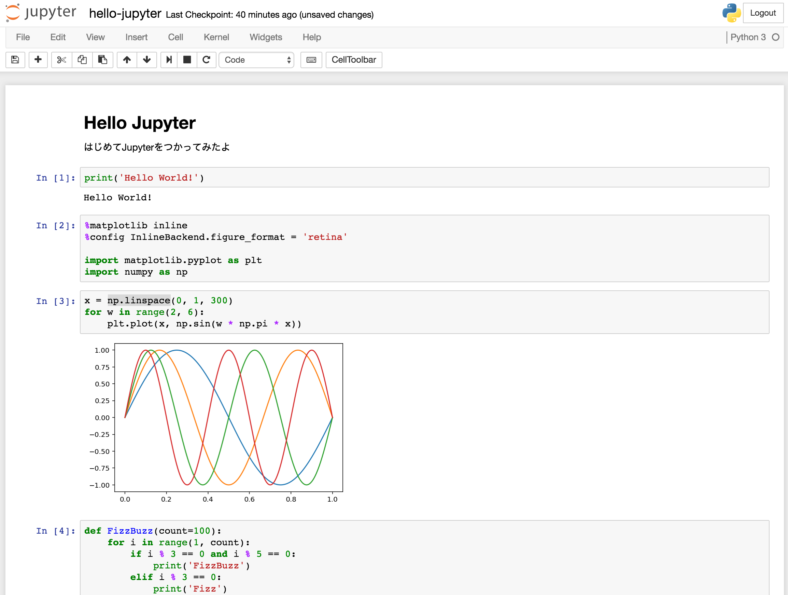

- Mon 06 February 2017
- development
- mani3
- #jupyter
UdacityのDeep Leaningのやつをはじめて，Jupyterというのがおもしろいなと思ってメモしておく
- Jupyter : http://jupyter.org/
事前にAnacondaをインストールしておく
環境をつくる
// 環境名はなんでもいい $ conda create --name jupyter python=3 // 環境に入る $ source activate jupyter
必要なパッケージをインストールする
(jupyter)$ conda install numpy matplotlib pandas jupyter notebook
実行
(jupyter)$ jupyter notebook
実行すると localhost:8888 でブラウザが起動する。 「File → New Notebook」 で新規にノートが開くのでそこに markdown や pythonのコードを書くことができる。 実行は Shift + Enter で行える。
こんな感じ

.ipynb はJSON形式なのでやさしい。 出力はHTMLやmarkdown、reSTなど，reSTで書き出すときは pandoc のインストールが必要だった．
さわってみて結構便利だったので，python を試行錯誤しながら書くのにはちょうどいいかもしれない。